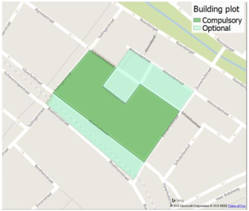
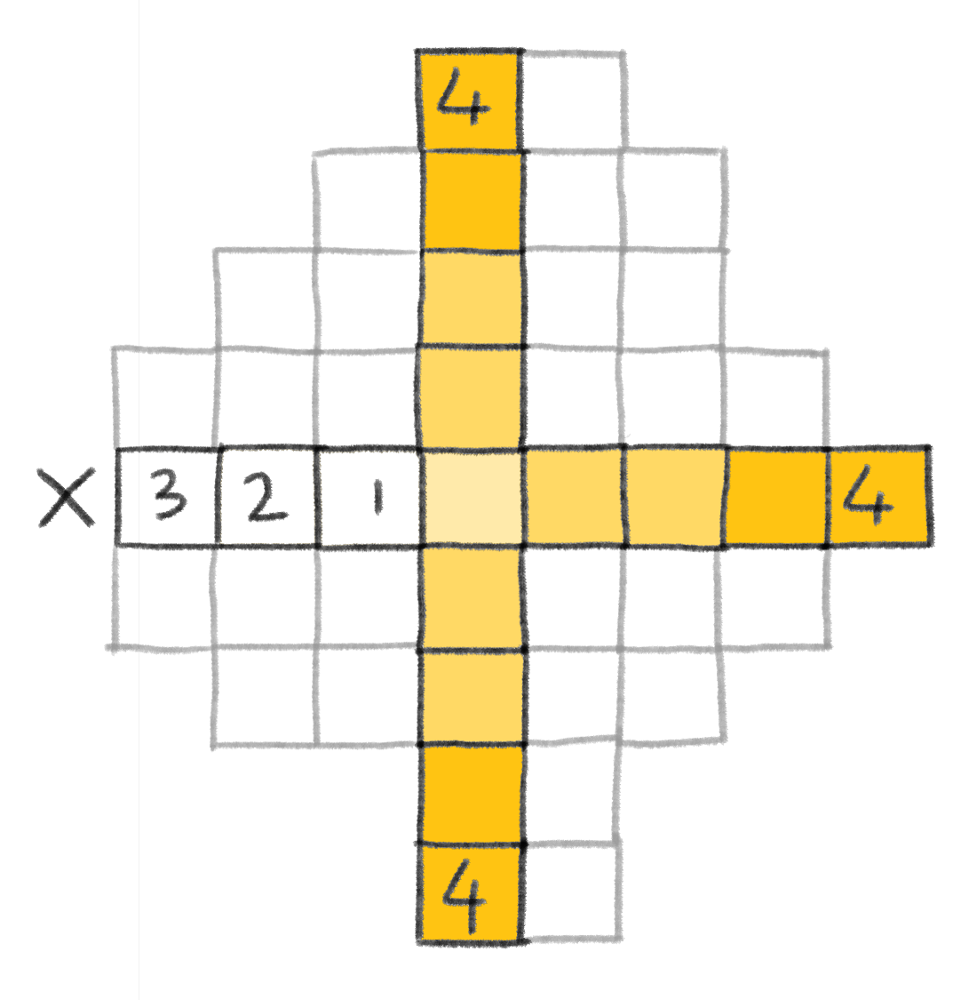
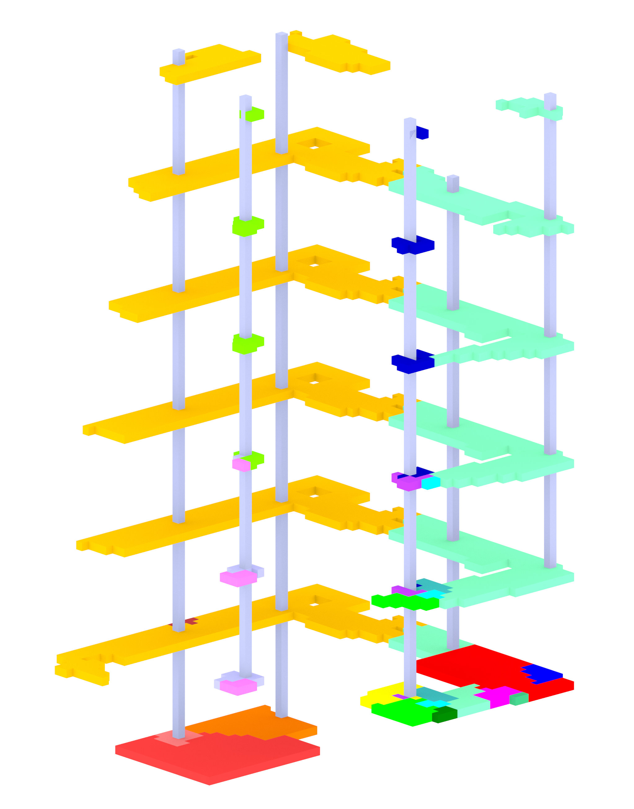

Planning
Building plot

Sustainability

Design goal 1

Design goal 2

Design goal 3

Design goal 4

Context

Metrodiagram

Residential perspectives

Configuring
REL

REL Explanation
Hierarchy

Stair dimensions

Stairs 3D

Flowchart notebooks

Computation flowchart
Solar envelope in lattice

Icon solar envelope

Solar accesibility in lattice

Icon solar accesibility

Sky view factor in lattice

Icon sky view factor

Floor closeness in lattice

Ground floor preference

Closeness to facade

Icon closeness to facade

Closeness to specific facade

Icon closeness to specific facade

Quietness from street noise

Icon quietness from street noise

Entrance access

Icon accessibility

Massing
MCDA Inital location

MCDA Attraction

MCDA Final location

Growth Initial location

Growth Attraction

Growth Final Location
Icon squareness

Distance between functions

Maximum building depth 1

Maximum building depth 2

Maximum building depth 3

Roof light

MCDA Growth algorithm: starting the growth
MCDA Growth algorithm: growing

MCDA Growth algorithm: finished growth

Simulation: starting the growth
Simulation: growing

Simulation: finished growth

Shafts and corridors growth: selecting voxels to evaluate

Shafts and corridors growth: finding mean voxels

Shafts and corridors growth: mean voxels again

Shafts and corridors growth: corridors growth

Simulation: selecting voxels to evaluate

Simulation: finding mean voxels

Simulation: mean voxels again

Simulation: corridors growth

Floorplan
Legenda floorplan

Floorplan 3D

Sustainability
Modularity

Modular system

Construction

Wooden joint

Interior wall

Tiles icons

Tiles houses

Tiles offices and workshops

Tiles coffeecorner and restaurant

Tiles library and shop

Tiles bathrooms and showers
Tiles underground parking and bikes

Tiles example 1
Tiles example 2

Tiles example 3
Tiles example 4

Tiles example 5
Tiles example 6
Computing diagram forming time development

Tile creation

Computing diagram

Tiled voxelized envelope